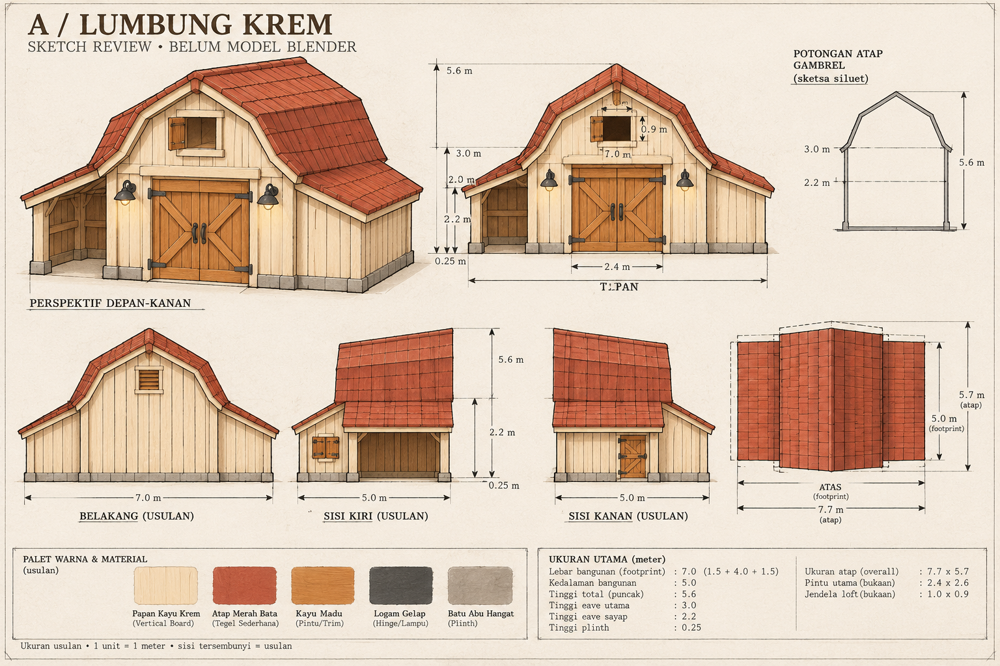
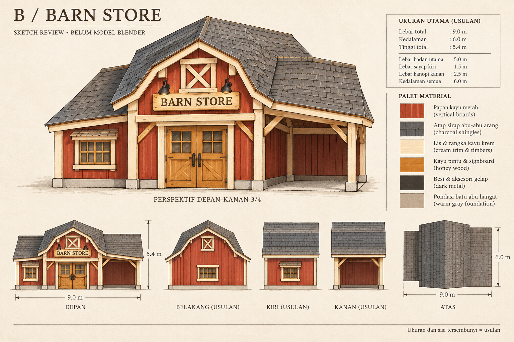
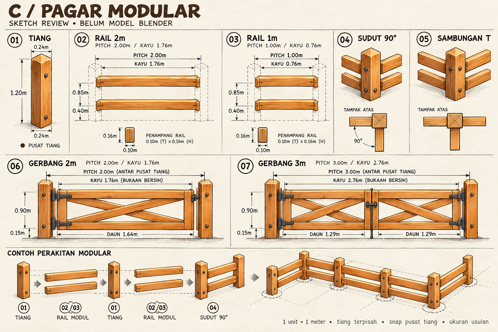
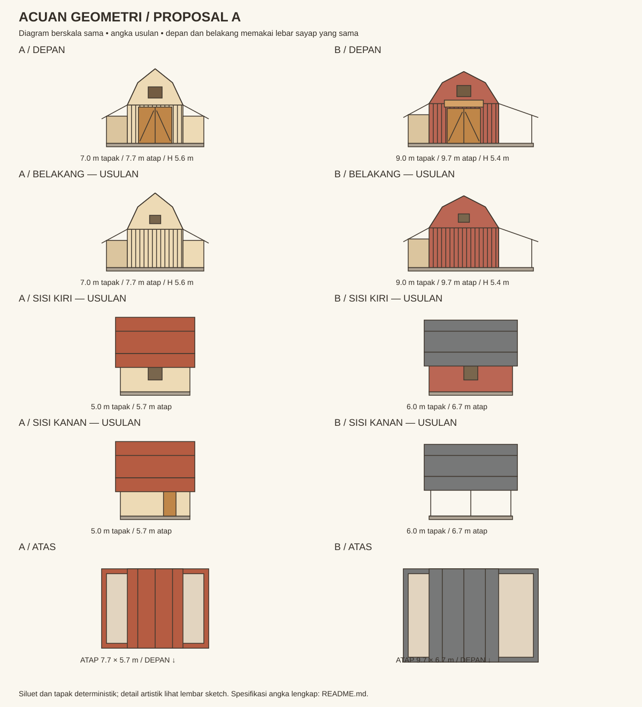
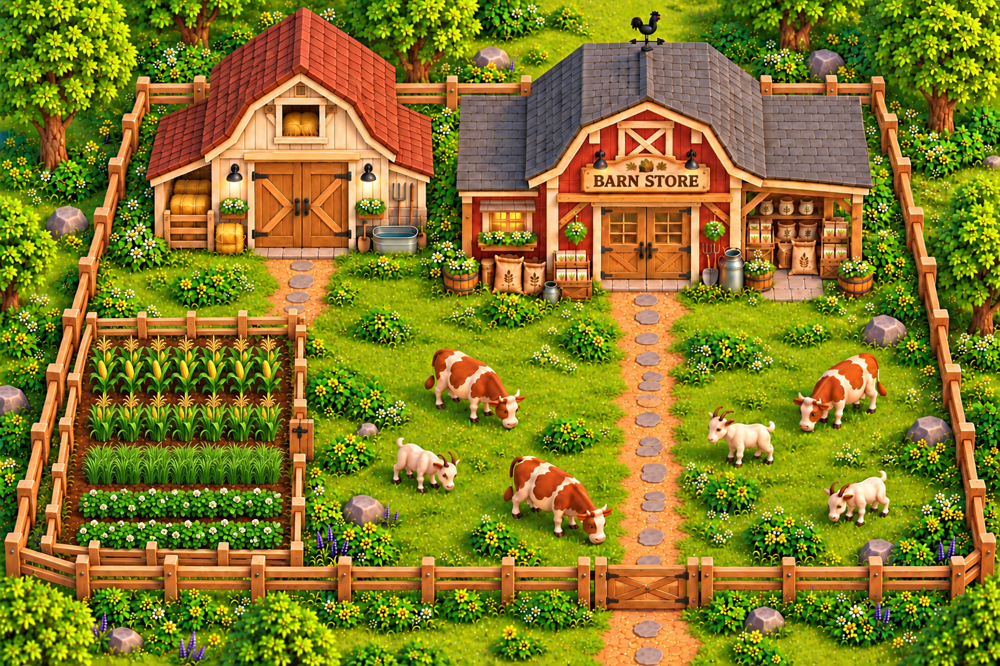

Bangunan farm + pagar modular
Proposal A · sketch disetujui 13 Oktober 2026 · modeling selesai, sumber di ArtSource/FarmBuildingsFence_A
Acuan gambar pengguna, fokus exterior dua bangunan dan pagar. Belakang, sisi tersembunyi, dan semua ukuran merupakan usulan. Sketch memperlihatkan arah bentuk dan warna; anotasi gambar generatif belum merupakan gambar teknik berskala. Gunakan ukuran dokumen untuk modeling.
| Bagian | Tapak W × D | Tinggi | Envelope atap |
|---|
| A · Lumbung krem | 7 × 5 m | 5,6 m | 7,7 × 5,7 m |
| B · Barn Store merah | 9 × 6 m | 5,4 m | 9,7 × 6,7 m |
| Pagar | Pitch 1 / 2 m | Tiang 1,2 m | Gerbang pitch 2 / 3 m |
A · Lumbung krem

B · Barn Store merah

Papan nama dan tulisan ditunjukkan sebagai konsep. Atlas belum menyediakan teks BARN STORE persis; default produksi papan kosong, atau teks mesh terpisah jika disetujui.
C · Pagar modular

Panel rail tidak membawa tiang. Setiap sambungan memakai satu tiang; tiang sudut dan T menggantikan tiang biasa. Angka modul adalah pitch antar pusat tiang.
Acuan geometri berskala
Diagram berikut memakai satu sumber ukuran untuk semua tampak. Ini acuan volume/tapak; sketch di atas menjadi acuan detail artistik.

Material dan persiapan Blender
Reuse TFP_Atlas_1A.psd + TFP_Atlas_1A.mat dari Toon Farm Pack. Warna memakai area palet atlas; detail papan dan genteng menjadi geometry sederhana. Tidak ada atlas baru. Bahan eksekusi, ukuran komponen, profil atap, pivot, socket pagar, UV, dan target budget disimpan di spesifikasi proposal.
Lihat referensi asli
